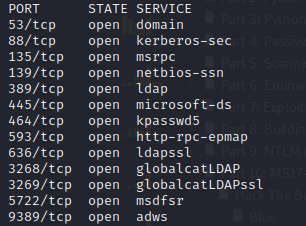

Hack The Box Active 10.10.10.100 : https://www.hackthebox.eu/home/machines/profile/148
- nmap -T4 -p- 10.10.10.100

- nmap -A -T4 -p53,88,135,139,389,445,464,593,636,3268,3269,5722,9389 10.10.10.100
=> Signs we are on a domain :
- 53 : DNS
- 88 : kerberos (authentification system)
- 139 + 145 : open, netbios (smb)
- 389 : Windows Active Directory (domain : active.htb)
- => Very similar to a real-life domain controller situation !